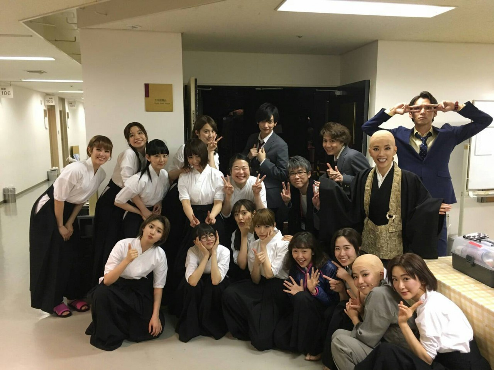
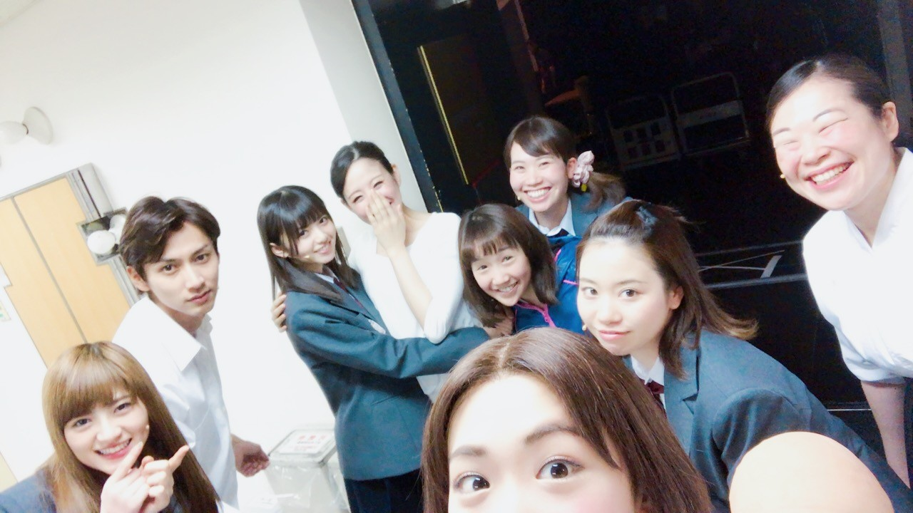
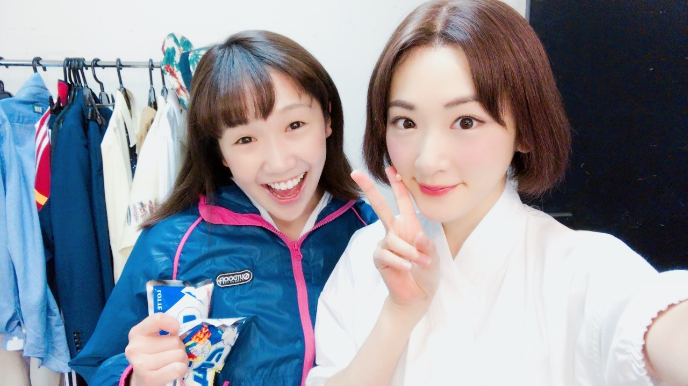
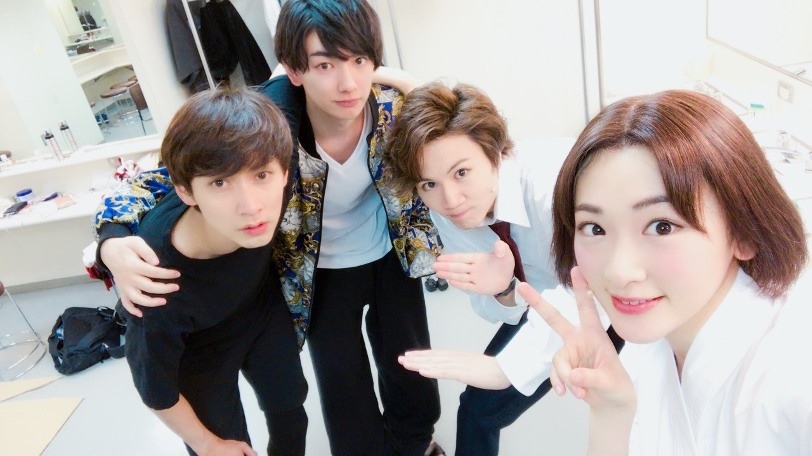
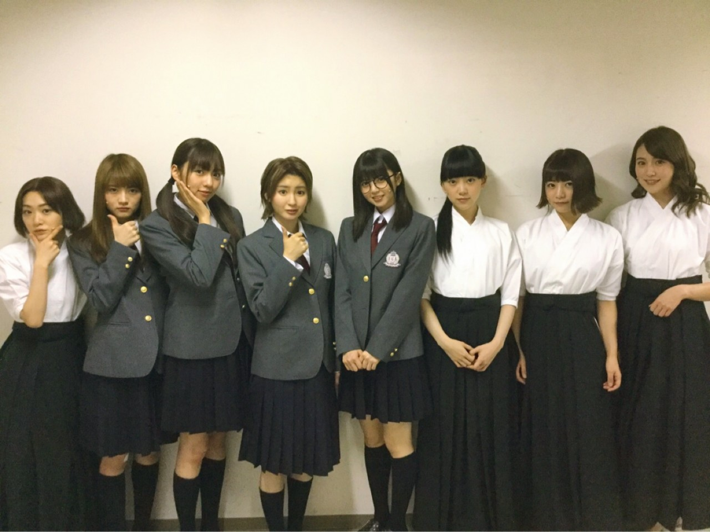

| 2017/06 12 Mon | 生駒里奈 ほら、やっぱり９時半に一回起きた。 |

舞台 あさひなぐ
４月から稽古が始まり、
東京、大阪、名古屋と公演をさせて頂き、
昨日、無事大千穐楽を迎えました！
見にきてくださった全てのお客様
温かい拍手をありがとうございました！！
あさひなぐ期間中はほんとに色んな事があったなぁ。
でも、こんなにも人の優しさに救われた事はないですよ。
感謝です！！
神様が、今しかぶっ壊れられないから今やれっ
って言ったきがする。
少なくとも、あさひなぐがあったから私は今笑顔でいられるのだと思います。
今後の人生に必要なやり方を教わりました！！
これは、ほんとに重要だな！！

わちゃわちゃ〜
私のとなりのカメラに見切れた一瞬親指みたいなのは、
実は真琴つばささんですっっ
ちょっと頭だけいれてみるっ
っておっしゃって写られてました！！
つばささんのお茶目さにみんなで癒されておりました(*´꒳`*)
カメラを向けたらね、みんなうつるうつる〜って入ってきてみんなかわいいかよ。

原梓ちゃん！
あずにゃん！
ほんとに迷惑かけたよ〜(´；ω；｀)
あずにゃんがいたから私は舞台の上でえりになれたよ。
同い年で、こんなにしっかりして頑張っている。
私も見習っていかないと！
あずにゃんこれからもよろしくね(*´꒳`*)

あさひなぐmen's
カズさんはハンサムの無駄遣い笑
こうくん、ともくんに威嚇係のネタを頂いたし、
いろいろお世話になりました(*´꒳`*)

乃木坂メンバー
みんなが私を理解している人達だったからこそ、
私は自分に向き合って、必死に闘えました。
だから部長野上えりをみんなの前で出来ました。
二つ坂は特に、
尊敬するよ〜(´；ω；｀)
あんなにボロボロなみんなを観たことがなかったよ。
よく最後まで生き抜いたよ笑！！
座長のあすかちゃんの頑張りに私も刺激を受けました。
あさひなぐカンパニーでは最年少でしたが、
よく、頑張ったね！！
ありがとう。
また、思い出写真はモバメとか、またブログに載せるね(*´꒳`*)
あさひなぐで学んだ事を次に繋げていくぞ！！
でも、私はやっぱり。
ひとつの作品を必死に作るこの時間が大好きなんだなぁって
実感しました。
運動が苦手だろうが、歌が下手くそだろうが、
じゃあ出来るようにするまでだと。
自分を否定して出来なくしていたのは私じゃないか。
出来ないことが多いってある意味楽しいよ。
頑張れるからね。
出来ること増やしたいな。
最後に、
野上えりちゃんは私にとってすごーく難しい役でした。
でも、すごーく似ていました。
だから台詞や考え方は入った瞬間から私の物になりました。
ごめんね、もっともっと早くに憑依させたかったな。
でも、あなたとは仲良く出来たと思います。
ありがとう(*´꒳`*)
ではっ
へばなっ★彡